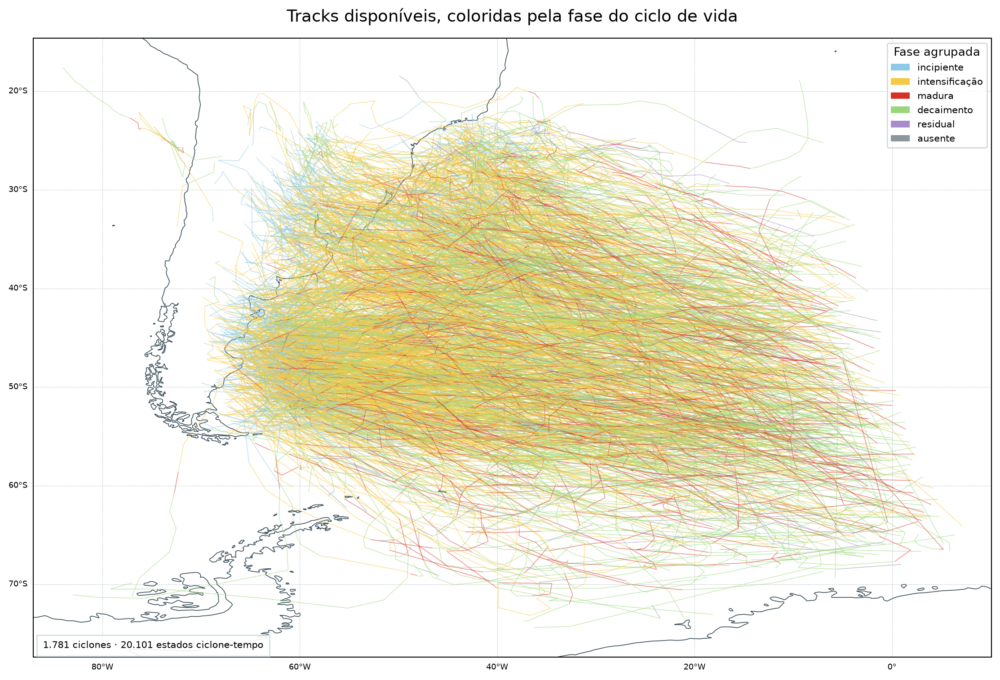
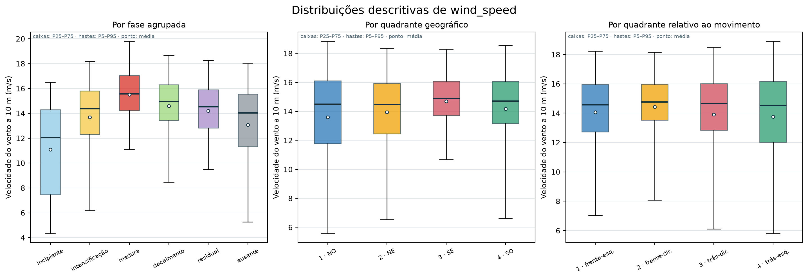
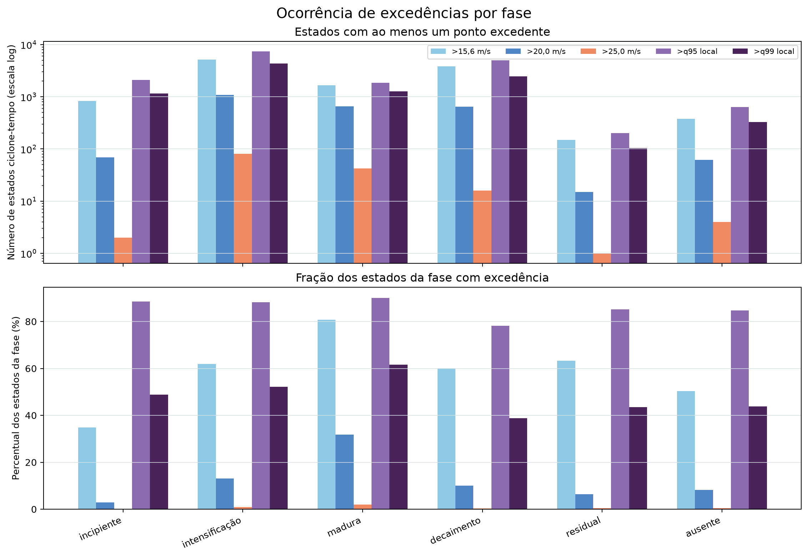
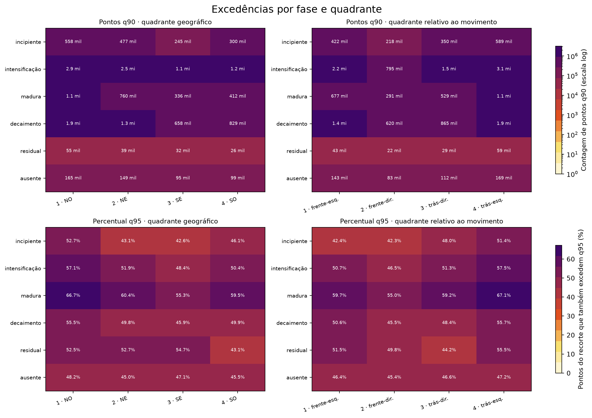

Análise exploratória dos ventos associados aos ciclones
Motivação
Antes de ajustar modelos, é necessário compreender a cobertura da amostra, a distribuição dos ventos armazenados e os sinais descritivos de organização em relação ao ciclone. Esta análise pergunta se fases do ciclo de vida e setores espaciais apresentam diferenças visíveis que justifiquem experimentos posteriores.
Ela é estritamente descritiva: não estima incerteza entre ciclones, não testa hipóteses e não produz coverage probability, footprint probabilístico ou hazard geográfico.
Perguntas exploradas
- Onde estão as tracks presentes no recorte de vento e quais fases elas cobrem?
- Como a distribuição pontual de
wind_speedvaria entre fases? - As distribuições pontuais diferem entre quadrantes geográficos e quadrantes relativos ao movimento?
- Em quantos estados ciclone–tempo há ao menos uma excedência de cada threshold?
- Como contagens q90 e proporções q95 se distribuem entre fases e quadrantes?
- Como os pontos q90 de um ciclone individual evoluem no espaço e no tempo?
Dados e população
A análise usa o recorte condicionado de vento de 2010–2020. Ele contém 1.781 ciclones, 20.101 estados ciclone–tempo e 17.182.983 linhas de pontos de grade. O ciclone, identificado por track_id, é a unidade científica fundamental quando aplicável. Um estado ciclone–tempo é um ciclone em um horário ERA5 de 6 h; cada estado pode contribuir com muitos pontos espaciais.
O recorte não contém toda a grade nem todos os estados. Uma linha foi armazenada quando o ponto estava a até 1.100 km do centro e satisfazia wind_speed > min(15,6 m/s; q90_local). Portanto, estatísticas sobre linhas descrevem uma população já selecionada por vento e não podem ser interpretadas como climatologia completa.
Para apresentação, intensification 2, mature 2 e decay 2 foram reunidas às fases principais correspondentes. O sufixo indica uma ocorrência posterior não contígua na mesma track, não uma classe física diferente. Os rótulos originais permanecem preservados; residual e fase ausente continuam separados.
Método descritivo
- Centros distintos por ciclone e horário foram usados para mapear as tracks.
- Quantis e boxplots de
wind_speedforam calculados sobre linhas espaciais, com identificação explícita de que esses pontos não são observações independentes. - Para ocorrência de thresholds, cada par
track_id + timeconta no máximo uma vez por threshold, desde que tenha ao menos um ponto excedente. - Para fase e quadrante, foram comparadas contagens de pontos q90 e a porcentagem das linhas do recorte que também excedem q95.
- O exemplo individual foi escolhido por regra anterior ao exame visual: o ciclone que contém o maior
wind_speeddo arquivo.
Os quadrantes geográficos são noroeste, nordeste, sudeste e sudoeste. Os quadrantes motion-relative giram com o deslocamento do ciclone e representam frente–esquerda, frente–direita, trás–direita e trás–esquerda. Essa exploração formulou a hipótese depois testada com coordenadas contínuas em E-001; o resultado formal foi inconclusivo.
Resultados
1. Cobertura das tracks e fases
A primeira figura responde onde se concentram os centros dos 1.781 ciclones presentes no recorte e como as fases aparecem ao longo das trajetórias. Cada segmento liga estados consecutivos e recebe a cor da fase no ponto final; a costa fornece referência geográfica.

Observação. As tracks ocupam uma faixa ampla do Atlântico Sul e se sobrepõem intensamente. A figura confirma cobertura espacial heterogênea e mostra que diferentes fases ocorrem ao longo das trajetórias.
Interpretação. A sobreposição não é uma estimativa de densidade de ciclones nem de hazard; ela apenas localiza os centros dos sistemas selecionados. A população exibida exclui ciclones e estados sem linhas no recorte condicionado.
2. Vento pontual por fase e quadrante
A figura seguinte compara a distribuição de wind_speed, em m/s, entre fases agrupadas e entre as duas convenções de quadrante. Cada caixa mostra P25–P75, a linha central é a mediana, as hastes são P5–P95 e o ponto branco é a média. A população é formada pelas linhas espaciais armazenadas, não por resumos independentes por ciclone.

| Fase agrupada | Ciclones | Estados | Linhas espaciais | Mediana | P95 |
|---|---|---|---|---|---|
| Incipiente | 1.124 | 2.368 | 1.583.894 | 12,07 m/s | 16,49 m/s |
| Intensificação | 1.687 | 8.340 | 7.646.684 | 14,38 m/s | 18,16 m/s |
| Madura | 1.024 | 2.051 | 2.586.389 | 15,58 m/s | 19,77 m/s |
| Decaimento | 1.439 | 6.355 | 4.704.434 | 14,97 m/s | 18,67 m/s |
| Residual | 66 | 237 | 151.794 | 14,54 m/s | 18,26 m/s |
| Ausente | 677 | 750 | 509.788 | 14,05 m/s | 18,00 m/s |
Um ciclone pode contribuir para várias fases; a coluna de ciclones não deve ser somada.
Observação. A fase madura apresentou a maior mediana pontual, 15,58 m/s, e o maior P95 pontual, 19,77 m/s. As medianas por quadrante foram próximas: 14,47–14,90 m/s nos quadrantes geográficos e 14,51–14,78 m/s nos quadrantes relativos ao movimento.
Interpretação. O padrão é consistente com ventos mais intensos entre os pontos armazenados da fase madura. Ele não demonstra que a fase cause ventos mais fortes nem estabelece diferença entre ciclones, porque ciclones longos e estados com mais pontos têm maior peso.
3. Ocorrência de excedências por estado
Para reduzir a repetição de pixels, a próxima figura pergunta se cada estado ciclone–tempo contém pelo menos uma excedência. O painel superior apresenta o número de estados por fase e threshold; o inferior divide cada contagem pelo total de estados da fase. São mostrados 15,6, 20 e 25 m/s, q95 e q99. q90 não é exibido porque define aproximadamente o recorte de entrada.

Observação. Entre 2.051 estados maduros, 1.658 contêm ao menos um ponto acima de 15,6 m/s, 652 acima de 20 m/s, 42 acima de 25 m/s, 1.848 acima de q95 e 1.265 acima de q99. As contagens absolutas são maiores na intensificação para vários thresholds porque essa fase fornece 8.340 estados, a maior população.
Interpretação. Contagem absoluta e fração respondem perguntas diferentes. A primeira combina ocorrência com o número de estados disponíveis; a segunda descreve a presença de ao menos um ponto excedente dentro de cada fase. Nenhuma delas ajusta dependência entre estados do mesmo ciclone ou cobertura espacial desigual.
4. Fase e setores espaciais
Os heatmaps seguintes investigam se excedências se distribuem de forma assimétrica. As duas linhas superiores mostram contagens de pontos q90 nos quadrantes geográficos e relativos ao movimento; a escala de cor é logarítmica para acomodar ordens de grandeza distintas. As duas linhas inferiores mostram, em porcentagem, quantas linhas já selecionadas também excedem q95.

Observação. A fase madura apresenta as maiores porcentagens q95 em vários setores. No sistema geográfico, por exemplo, a proporção chega a 66,69% no quadrante noroeste. As contagens q90 são dominadas por fases e quadrantes que também contêm mais linhas.
Interpretação. Os mapas sugerem estrutura a investigar, mas misturam frequência de estados, duração, área selecionada e contribuição desigual de ciclones. Eles não estimam a probabilidade de cobertura de uma posição relativa e não permitem escolher entre o referencial geográfico e o relativo ao movimento.
5. Um evento individual
O exemplo visual pergunta como os pontos q90 evoluem durante uma única track. O ciclone 20100510 foi selecionado porque contém o maior vento do recorte: 34,85 m/s, em 18 de junho de 2010 às 06:00 UTC, durante intensificação. A animação percorre os 25 estados com linhas armazenadas entre 13 e 19 de junho. O catálogo completo contém 32 estados de 6 h: um posterior ainda possui suporte, mas zero linhas selecionadas, e os seis últimos não intersectam o domínio.
Em ambos os painéis, pontos coloridos são linhas com exceeded_q90 = true, e a cor representa wind_speed em m/s. O círculo tem raio de 1.100 km; o centro é colorido pela fase. À esquerda, as linhas radiais delimitam quadrantes geográficos; à direita, quadrantes orientados pelo deslocamento. A linha escura mostra o caminho já percorrido e a tracejada, o restante da track presente no recorte.
Observação. O campo selecionado muda de extensão e intensidade ao longo do ciclo, e o máximo ocorre na fase de intensificação desse caso específico.
Interpretação. Um caso ilustra a representação e ajuda a detectar problemas de suporte, mas não caracteriza a população. Áreas brancas significam apenas “não desenhado”: elas podem representar células abaixo do filtro, ausência reconstruível ou posições fora do suporte. O vídeo não é um footprint probabilístico.
O que aprendemos
- A amostra de vento tem ampla cobertura de tracks, mas é condicionada por um filtro e por um domínio espacial finito.
- A fase madura concentra os maiores quantis pontuais no recorte; isso é uma associação descritiva, não uma comparação inferencial entre ciclones.
- Diferenças de mediana entre quadrantes são pequenas, enquanto algumas proporções q95 variam; a utilidade dos referenciais ainda precisa ser testada.
- Contar estados, pontos ou ciclones produz estimandos diferentes. Experimentos futuros devem declarar qual unidade responde à pergunta.
- Estados ausentes e regiões brancas só podem ser interpretados depois de verificar o suporte espacial.
Limitações
- O arquivo armazena apenas pontos que passaram por
wind_speed > min(15,6 m/s; q90_local); distribuições pontuais não representam todo o campo ERA5. - Os percentis locais usam 2010–2020 e ainda serão revistos para o período maior pretendido; não são o threshold definitivo.
- Ciclones, estados e pontos contribuem desigualmente; boxplots e heatmaps não corrigem pseudorreplicação.
- Fase está ausente em 509.788 linhas, e a execução original do CycloPhaser não é integralmente reproduzível.
- O círculo de 1.100 km é truncado nas bordas; 5.977 estados do período não possuem suporte e 3.233 têm suporte mas zero linhas selecionadas.
- Não há teste de significância, intervalo de incerteza por ciclone, validação fora da amostra ou análise de sensibilidade.
- Evento, climatologia, excursion set, footprint e hazard permanecem objetos distintos; esta análise não transforma um no outro.
O que isso motiva
Os resultados justificaram formular E-001 sem antecipar sua conclusão. O experimento posterior fixou q95, pesos por estado, suporte, métricas e bootstrap por ciclone e encontrou evidência conflitante entre núcleo e cauda. Definição final de extremo, objeto espacial e modelos de ocorrência ou magnitude continuam pendentes.
Reprodutibilidade
Tabelas completas, versão da entrada, regra de seleção do caso, código e produtos estão reunidos em proveniência e reprodutibilidade. Esta página não depende do código para ser compreendida; os vínculos técnicos servem à auditoria e à reprodução.